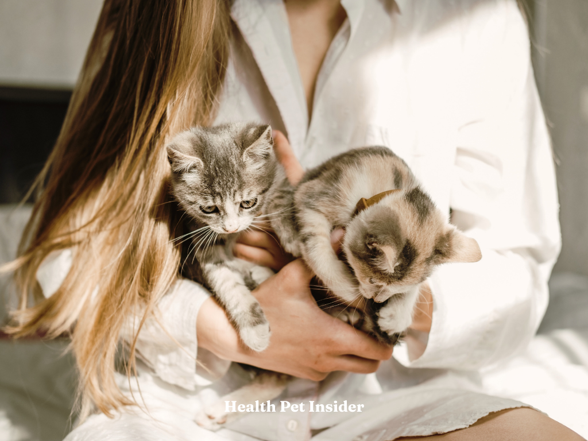

The Best Supplement For Cat Allergies
By Julie Arnold

Updated on January 4, 2026
A daily, allergen-reducing supplement for your cat

A supplement for your cat that reduces allergens directly at the source—before they trigger your allergies.
Welcoming a cat is exciting—but many new cat parents aren’t prepared for cat allergens. Fel d 1, the protein in cat saliva, spreads easily and triggers sneezing, itchy eyes, and congestion.
That’s why reducing allergens at the source matters. Pacagen Cat Allergen-Reducing Supplement helps neutralize Fel d 1 in your cat’s saliva—so less allergen ends up on furniture, fabrics, and in the air.
Why Cat Parents Choose Pacagen
- Targets the source: Reduces Fel d 1 directly in your cat’s saliva.
- Easy daily supplement: Works with any diet—wet, dry, or raw.
- Breathe easier: Less allergen buildup on soft surfaces.
- Safe for daily use: Vet-formulated and palatable.
Why Pacagen Is Better Than Egg Powder & Purina LiveClear
Many cat allergy solutions rely on egg-derived antibodies or specialized diets. While these approaches helped prove allergen reduction is possible, they come with limitations.
Pacagen vs Egg Powder Supplements
Egg powder products depend on antibodies sourced from eggs to bind Fel d 1. However, antibody stability can vary, effectiveness may decline during digestion, and these products do not support broader cat health.
Pacagen uses a purpose-built protein-based approach designed for consistency, daily use, and reliable allergen reduction—without relying on egg antibodies.
Pacagen vs Purina LiveClear
Purina LiveClear requires switching your cat to a specific dry food. That can be difficult for picky eaters and incompatible with wet or raw diets.
- Pacagen works with any existing diet
- No food transition required
- Focused allergen reduction without changing feeding routines
For households that want flexibility, Pacagen fits seamlessly into daily life.
Your First 30 Days With Pacagen
Day 1
Add two scoops to your cat’s food—salmon or chicken flavor.
Weeks 1–2
Fel d 1 levels begin declining as allergen spread slows.
Weeks 3–4
Noticeably less allergen buildup on furniture and fabrics.

Quick Q&A
- Is Pacagen safe? Yes, formulated for daily use.
- When will I notice results? Typically within 2–4 weeks.
- Does it replace cleaning? No—works alongside normal cleaning.
The Bottom Line
If you’re searching for the best supplement for cat allergies, Pacagen offers a flexible, science-driven alternative to egg powder and specialty diets.
By reducing allergens at the source—without forcing dietary changes— Pacagen helps create a more breathable home for everyone.